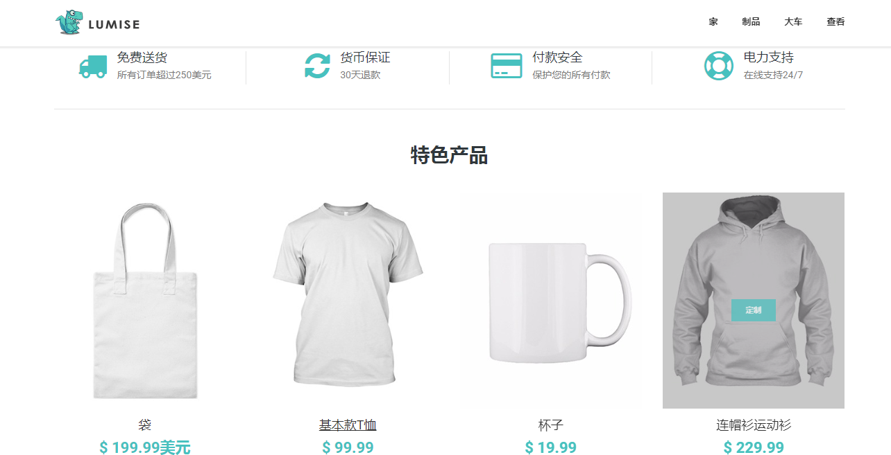
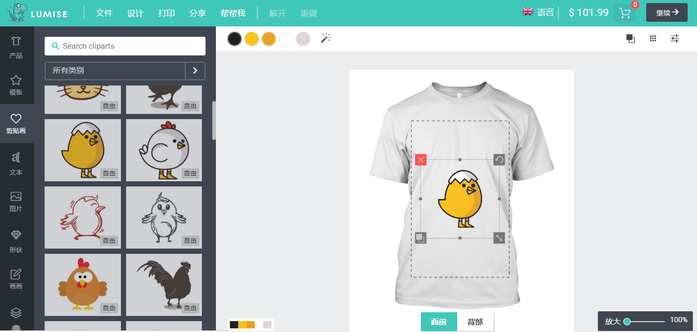

个性定制化商城一
说明
可以在线设计产品有：T恤,帽子,茶杯,鞋子,运动衫,手机壳,枕头,包包,名片.或者后台新增其他产品。
在线设计功能有：
- 1.设置产品背景颜色,黑色 白色 红色 黄色 等
- 2.有多种素材组成的模板库,共有上千种.用户自由选择使用的模板.后台可以新增模板
- 3.贴画库是由各种动物类 卡通类等几百种不同类型的贴画
- 4.支持1000多种英文字体,用户输入自己的文本内容
- 5.图片库,可以从图库中查找图案或者自行上传
- 6.形状库,各种不规则图形,用户可以自由调整大小和颜色
- 7.绘图画画，自定义画笔尺寸 颜色,自由绘画
- 8.图层，对已有图层进行删除或设置层级,设置透明度
其他功能：
- 导入文件
- 下载设计文件 （下载成JPG PNG SVG PDF等格式）
- 打印 设置纸张尺寸和自定义大小
- 分享 用户创建分享链接
- 下单 在线制作好之后 添加到购物车进行下单
- 支付 在线支付功能
产品主页：
- 首页幻灯片 滚动展示文字与图片
- 产品列表
- 购物车等
产品设计工具 - 独立的php应用程序
专业的产品设计工具，由HTML5 + JavaScript技术构建。支持在线设计T恤,茶杯,帽子,运动衫,购物袋,手机外壳,枕头,运动鞋. 专注于用户体验，并为您的打印服务商店提供突破性解决方案。 此外，它还具有许多强大的独有功能和顶级友好界面，可帮助您的用户轻松设计任何想法。
外观图
 
产品设计 - 主要特点！
| 高UI / UX Lumise作为一个应用程序，使用友好。我们之前是主题提供商，因此我们知道哪些是最适合客户的。让我们和Lumise一起摇滚！ |
预建设计模板 创建出色的设计模板以适应任何类型的产品，为此设置价格，用户只需点击一下即可使用它。 |
|
| 无限的Cliparts股票 你是否担心cliparts资源？让我们为您处理，您可以做其他您喜欢的事情。有超过2个以上的资源剪贴画供您的客户使用：例如，包含超过120k +项目的Openclipart。惊人的股票！ |
出口/进口设计 您的客户可以导出设计并从其他设备导入设计以继续工作或结帐。您可以导出设计以创建新模板，甚至可以保存到个人数据。它非常灵活！ |
|
| 多种语言 Lumise支持语言切换。所有语言都是由管理面板自动控制和翻译的，您可以将翻译文本放在那里。 |
支持手机和平板电脑 Lumise可以作为真正的原生应用程序在移动设备和平板设备上运行，这些应用程序很受客户欢迎。您的网站可以从任何设备获取订单 |
|
| 设计准备好结账后打印 Lumise支持多输出打印，如PDF，SVG，JSON，PNG ......所有这些都是高质量的，并且与所有打印设备兼容。 |
社交媒体 您的客户可以从社交帐户获取图像。我们支持Facebook，Instagram等。 |
|
| 特别推车适用于任何系统 Lumise提供单独的购物车系统，您可以添加项目并进行编辑，然后您的cms将在结帐时处理其他步骤。 |
撤销重做 在应用程序上工作看起来像桌面上的应用程序是吸引客户的最佳点。使用Lumise，您可以在设计后重做/撤消所有操作。 |
|
| 文字效果 使文字更加曲线，鱼眼效果，斜，凹凸是你可以用文字做的很多事情之一。 |
过滤效果 Lumise Filter是一款多功能工具，可以对照片进行局部调整。过滤器以一种过滤器命名，用于在风景摄影中使天空变暗，但其用途远不止于此。 |
|
| 裁剪/可编辑的照片 无论您的目标是什么，Lumise都有许多方法可以让它们更加个性化。裁剪图像，通过滤镜颜色，效果突出显示对象，甚至删除背景。 |
掩模层 您的客户是否希望看到文本？没问题，面具层帮助他们得到它。有这个功能真是太棒了！ |
|
| 二维码 使用QR码个性化设计也不错。客户的朋友可以通过小型电话支持QR码扫描仪轻松获取消息。 |
自动捕捉 当您移动一个或多个图形时，它将对齐或“捕捉”中心点中最近的线条交叉点，即使网格不可见，也可以与其他图像或图层对齐。 |
|
| 灵活的编辑区域 Lumise可帮助您通过鼠标操作轻松选择编辑区域。您也可以设置区域的半径。 |
支持多种产品类型 无论您的产品是什么，只需要打印的地方，Lumise就可以为该产品应用打印区域。手机壳，手杖，马克杯，海报...... Lumise可以处理所有这些。 |
|
| 终极印刷计算 价格基于一些文字，颜色或剪贴画。印刷服务有最受欢迎的计算方法; 我们都是这样。您可以轻松配置它们。 |
设置产品的预模板 为了快速销售，您可以创建模板并将其分配给产品。您的用户只需为属性选择其他值，然后购买产品。 |